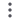
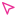

Library #1
100 credits ＋
Depicts a serene landscape at dawn, with mist rolling
GPT Image 2 1:1 2K Add reference

Image generatorLocked
Depicts a serene landscape at dawn, with mist rolling
T
Preview ready

Kéo nền để pan · Scroll / pinch để zoom · 0 để Fit · Motion để xem animation.